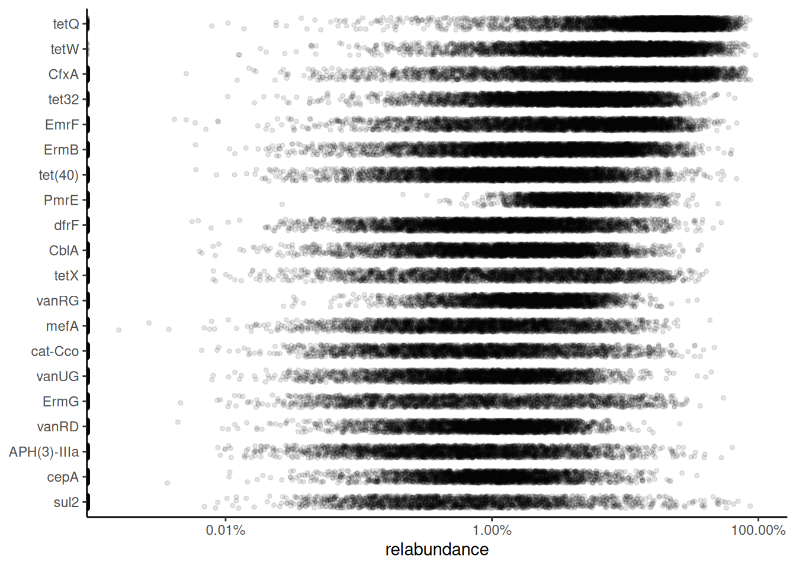
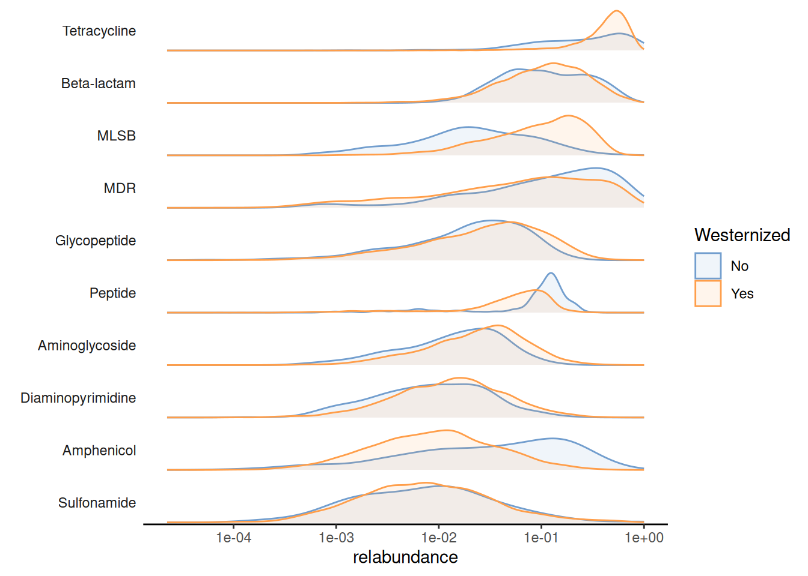
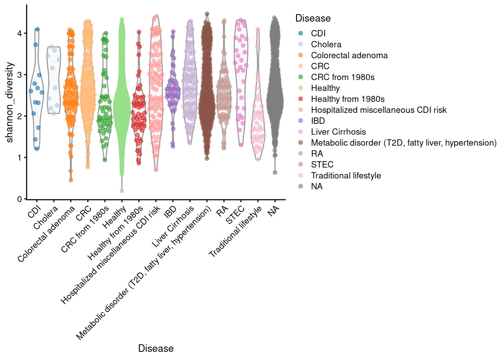

This tutorial is developed as a part developed for NCBI codeathon (see details) a hackathon-style event focused on rapid innovation. While we encourage you to explore and adapt this code, please be aware that NCBI does not provide ongoing support for it. For general questions about NCBI software and tools, please visit: NCBI Contact Page.
The tutorial provides the framework developed by integrating R/Bioconductor packages to analyse Antimicrobial Resistance Gene (ARG) data derived from metagenome sequence data. For the purpose of this tutorial, we are using Lee et al. (2023) dataset for analysis in R/Bioc. See data summary. The data is pre-formated into TreeSummarizedExperiment object which can be downloaded as R object (.rds) file from here.
Note: If you are interested know about TreeSummarizedExperiments
Install and load required packages
packages <-c('mia', 'miaViz', 'scater', 'ComplexHeatmap', 'pheatmap')# Get packages that are already installed installedpackages_already_installed <- packages[ packages %in%installed.packages() ]# Get packages that need to be installedpackages_need_to_install <-setdiff( packages, packages_already_installed )# Loads BiocManager into the session. Install it if it not already installed.if( !require("BiocManager") ){install.packages("BiocManager")library("BiocManager")}# If there are packages that need to be installed, installs them with BiocManagerif( length(packages_need_to_install) >0 ) {install(packages_need_to_install, ask =FALSE)}# load packageslapply(packages, require, character.only =TRUE)
The data is of class TreeSummarizedExperiment (TSE) with following data containers:
Assays: A two-dimensional matrix with abundance data. Columns represent samples and row represents features (microbial taxa, in this case).
rowData: This is data about the features present in rows of assays. In this case we have taxonomic classification of our microbial taxa.
colData: This is data about the samples
Alternative experiments (altExp): Any alternative counts table or experiments are stored in this slot. In our case we have added another TSE object with abundance of antibiotic resistance genes in our samples. In our case there are two alternative experiments namely, ‘read’ and ‘assembly’. We will be focusing on ‘read’ based experiment.
Now, lets plot the jitter plot based on relative abundance data, similar to the one presented at (Salosensaari et al. 2021) (Supplementary Fig.1), can be visualized as follows:
Warning in scale_x_log10(label = scales::percent): log-10 transformation
introduced infinite values.

The relative abundance values for the top-10 AMR genes can be visualized as a density plot over a log-scaled axis, with “Westernized” variable indicated by colors:
Warning in scale_x_log10(): log-10 transformation introduced infinite values.
Warning: Removed 12041 rows containing non-finite outside the scale range
(`stat_density()`).

Diversity and Similarity
Alpha diversity
Alpha diversity can be estimated with addAlpha() wrapper function that interact with other packages implementing the calculation, such as vegan (Oksanen et al. 2020)
These functions calculate the given indices, and add them to the colData slot of the SummarizedExperiment object with the given name.
# calculate observed alpha diversity and add it to colData slotaltExp(tse, 'read') <-addAlpha(altExp(tse, 'read'), assay.type ="abundances", index ="shannon_diversity", name ="shannon_diversity",detection =10)# plotplotColData(altExp(tse, 'read'),"shannon_diversity","Disease",colour_by ="Disease") +theme(axis.text.x =element_text(angle =45, hjust =1)) +labs(expression(Richness[Observed]))

Unsupervised ordinations
Unsupervised ordination methods analyze variation in the data without additional information on covariates or other supervision of the model. Among the different approaches, Multi-Dimensional Scaling (MDS) and non-metric MDS (NMDS) can be regarded as the standard. They are jointly referred to as PCoA.
# Run PCoA on relabundance assay with Bray-Curtis distancesaltExp(tse, 'read') <-runMDS(altExp(tse, 'read'),FUN = vegan::vegdist,method ="bray",assay.type ="relabundance",name ="MDS_bray")
Sample dissimilarity can be visualized on a lower-dimensional display (typically 2D) using the plotReducedDim() function from the scater package. This also provides tools to incorporate additional information encoded by color, shape, size and other aesthetics.
A few combinations of beta diversity metrics and assay types are typically used. For instance, Bray-Curtis dissimilarity and Euclidean distance are often applied to the relative abundance and the clr assays, respectively. Besides beta diversity metric and assay type, the PCoA algorithm is also a variable that should be considered. For more informatition read Unsupervised ordination.